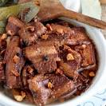

Adobo Recipe

Description
The word adobo is derived from the Spanish word adobar which means “to marinate”.
But in the Philippines, adobo refers to both the process of marinating food with
a predominantly vinegar base, as well as the finished dish
Ingredients
- 1kg Pork meat
- 1 sprite
- 1 pepper
- 1 tbps salt
- 1 cup soy sauce
- 1 cup vinegar
- 3 bay leaf
- 1 cup water
- 2 chilies optional
- 3 cloves garlic
- 1 onion
- 1 garlic
- 1 tbps oil
Steps
- marinate pork with soy sauce,pepper,sprite overnight
- saute onion garlic and ginger in a pan
- put the marinated pork
- put water and vinegar put bay leaf salt let it boil until the meat is tender
- if its tender put chillies on top optional READY TO SERVE and ENJOY!